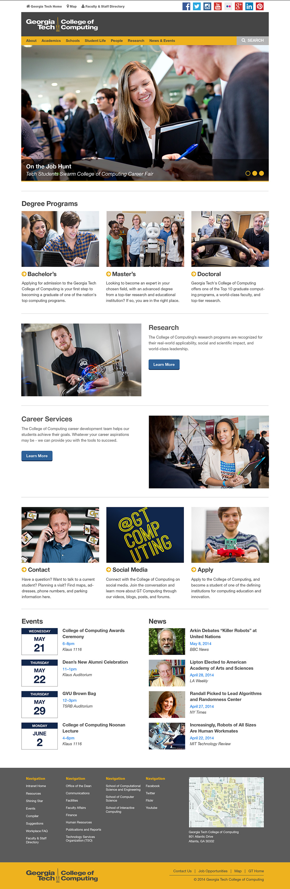

Georgia Tech
Visual Design | Front-End Development

I served as Senior Designer for Georgia Tech's College of Computing for over four years, during which time I took on many responsibilities, including visual design, art direction, UI/UX design, and front-end development (occasionally providing photography and video editing as well). I led visual rebranding efforts for all print and digital communications materials, and created a design system for use within the College's schools and research centers to help maintain consistency. I also served as lead designer for a redesign of the College's website, providing wireframes, user flows and design mockups, as well as front-end development.


